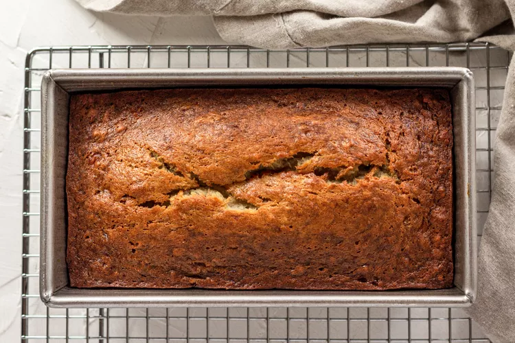

.
Ingredients
Wet Ingredients
1 cup greek yogurt
1 egg
4 tbsp melted butter
1/2 cup agave
1–2 ripe bananas (use 2 if using agave)
Splash of vanilla extract
Dry Ingredients
1 cup all-purpose flour
1/2 tsp baking soda
3/4 tsp baking powder
Pinch of salt
(Optional) Chocolate chips
Crumble
1 tbsp soft unsalted butter
1 tbsp brown sugar
1/4 cup walnuts or oats
1/2 tsp cinnamon
Equipment
Mixing bowl
Spatula
Bread pan
Sifter
Directions
Step 1: Preheat oven to 350°F
Step 2: Melt the butter and mash the bananas.
Step 3: Mix yogurt, egg, butter, agave, and vanilla in a bowl.
Step 4: In another bowl, combine flour, baking soda, baking powder, and salt.
Step 5: Sift dry ingredients into wet ingredients and mix well.
Step 6: Grease the bread pan and pour in the batter.
Step 7: Top with the crumble mixture.
Step 8: Bake for 38 minutes or until golden brown.
